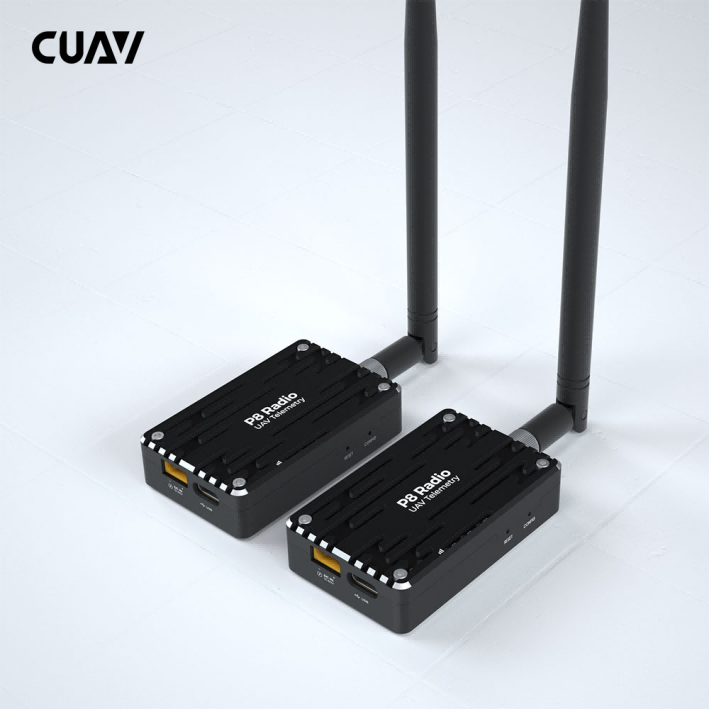
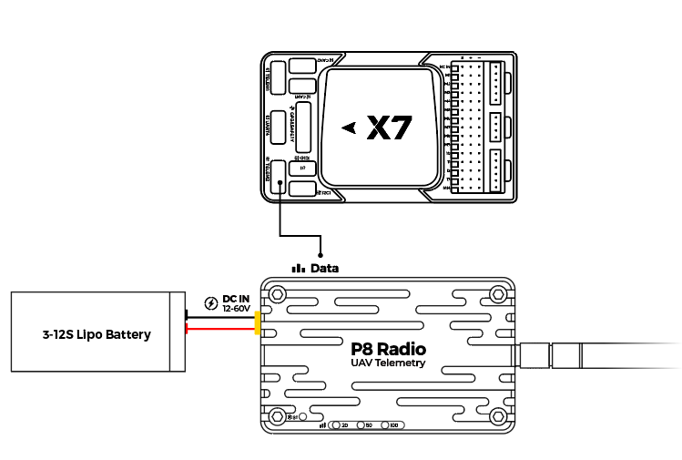

[copywiki destination=”plane,copter,rover,blimp”]¶
CUAV P8 Radio¶
P8 Radio is a remote data transmission module for drones; it has a remote data transmission capability of 60KM+;
Its transmission rate is as high as 375Kbps, and it supports multiple working modes such as point-to-point, point-to-multipoint, and relay communication; for various application scenarios.
Key Features¶
Long range >60km（depending on the antenna and use environment).
Supports point-to-point, point-to-multipoint, and repeater modes.
1 Watt (+30dBm) transmit power.
Up to 345Kbps transfer rate.
Supports 12v~60V operating voltage.
Unit can operate either as ground station modem or aircraft modem.
Independent power supply for more stable operation.
Purchase¶
Order from cuav store. or from here.
Pinouts¶

Connection with Flight Control¶
V5+/v5 nano/X7/X7 PRO/NORA ： Green connector is connected autopilot’s telemetry UART, white connector is connected to P8 radio.